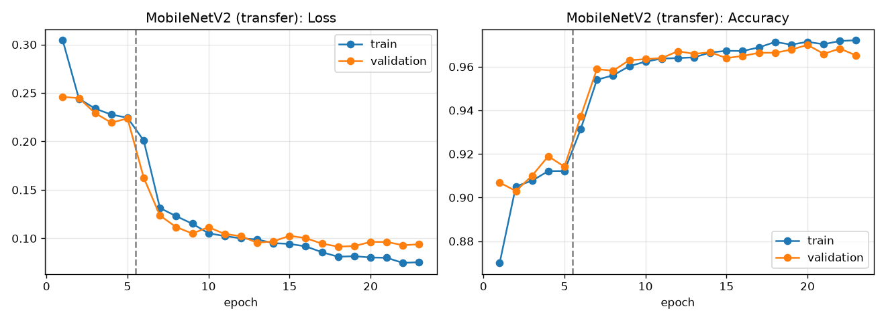

1. Interactive AI Microscope & Grad-CAM Workbench
Executes a complete 4-stage convolutional forward pass and exact Block-4 backpropagation in your browser. Drag the split-screen comparison slider across the cell, inspect pixel-level stain & Grad-CAM intensity, or view live intermediate feature maps.
Specimen Selector
128×128 RGB2. Clinical Decision Threshold & Curve Studio
In clinical malaria screening, a False Negative (missed infection) risks untreated progression, whereas a False Positive merely triggers a fast microscopist review. Drag the threshold slider to move the live operating point across the Precision–Recall–Sensitivity curves and observe the exact confusion matrix on all 4,134 test cells.
P(Parasitized) ≥ T
0.176
Live Confusion Matrix (4,134 Cells)
Custom CNN @ 0.1763. Interactive Training Curves & Diagnostic Plots
Explore epoch-by-epoch convergence from outputs/history_cnn.csv (46 epochs) and outputs/history_mobilenet.csv (5 frozen + 18 fine-tune epochs), or click any figure generated by train.py to inspect in full screen.



4. Benchmark Comparison & Statistical Significance
All metrics are computed from outputs/results.csv on the 4,134-image test split. Paired bootstrap resampling tests whether performance differences between MobileNetV2 and the Custom CNN exceed random test-set sampling noise.
Complete Test-Set Performance Matrix
Positive Class = Parasitized (1)| Model Architecture | Decision Cutoff | Accuracy | Precision | Recall (Sensitivity) | Specificity | F1 Score | ROC-AUC | Missed (FN) | False Alarms (FP) |
|---|---|---|---|---|---|---|---|---|---|
| Custom CNN (Headline) | 0.500 (default) | 96.57% | 97.34% | 95.74% | 97.39% | 0.9654 | 0.9927 | 88 | 54 |
| Custom CNN (Headline) | 0.176 (tuned) | 95.55% | 93.89% | 97.44% | 93.66% | 0.9563 | 0.9927 | 53 | 131 |
| MobileNetV2 (Transfer) | 0.500 (default) | 96.15% | 97.70% | 94.53% | 97.77% | 0.9609 | 0.9937 | 113 | 46 |
| MobileNetV2 (Transfer) | 0.281 (tuned) | 96.52% | 95.89% | 97.19% | 95.84% | 0.9654 | 0.9937 | 58 | 86 |
Computational Efficiency & Latency
RTX 5050 FP16Paired Bootstrap (MobileNetV2 − Custom CNN)
1,000 Resamples| Metric | Cutoff | Δ Diff | 95% CI Range | Verdict |
|---|---|---|---|---|
| ROC-AUC | — | +0.0010 | [-0.0003, +0.0025] | Within Noise |
| Accuracy | 0.50 | -0.41 pts | [-0.85, +0.05] pts | Within Noise |
| F1 Score | 0.50 | -0.0045 | [-0.0089, +0.0003] | Within Noise |
| Accuracy | Tuned | +0.97 pts | [+0.41, +1.55] pts | MobileNetV2 Better |
| F1 Score | Tuned | +0.0091 | [+0.0037, +0.0148] | MobileNetV2 Better |
5. Neural Architecture, Grad-CAM Insights & Limitations
Custom MalariaCNN Pipeline (Click Any Stage to Inspect Tensor Specs)
Total: 249,505 Trainable ParamsData Hygiene & Split Integrity
The Kaggle NIH release contains a byte-identical nested folder (cell_images/cell_images/) and Windows Thumbs.db artifacts. Our pipeline strictly reads cell_images/Parasitized (13,779 PNGs) and cell_images/Uninfected (13,779 PNGs), performs a stratified 70/15/15 split (seed 42), and verifies 0 shared MD5 file hashes across splits.
Grad-CAM Explainability
On true positive detections, the Custom CNN's 16×16 Block-4 Grad-CAM activation concentrates tightly on the dark-purple Giemsa-stained chromatin ring inside the erythrocyte while ignoring the black background. False positives primarily arise from extracellular stain debris along jagged cell segmentation borders.
Clinical Limitations & Scope
1. Label Noise: Several highest-confidence "errors" are visibly mislabeled ground-truth images in the NIH dataset.
2. No Patient-Level Split: Absence of slide IDs in the Kaggle release means cells from the same smear can span splits.
3. Screening Aid Only: All positive or borderline detections require confirmation by a trained microscopist.